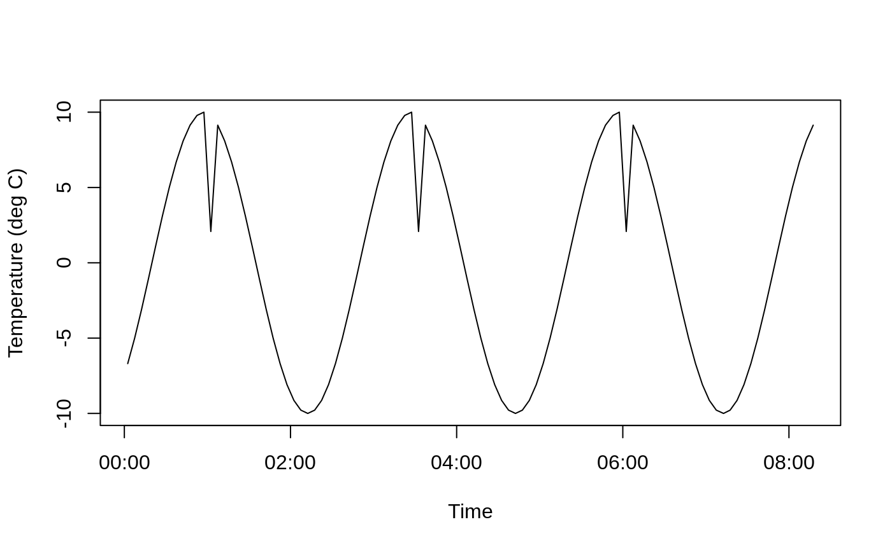

Credentials and base url for cumulocity are stored in a user’s private .Renviron file.
The credentials are defined as follows:
CUMULOCITY_base_url = "[tenant url]"
CUMULOCITY_usr = "[username]"
CUMULOCITY_pwd = "[password]"The tenant url should be of the form “https://tenant_name.cumulocity.com”.
The file .Renviron can be edited with usethis::edit_r_environ().
Get devices for the tenant and display a few columns. If no arguments are passed, get_devices() returns all devices.
devices <- get_devices()
print(devices[,c("type", "name", "id")])
#> type name id
#> 1 c8y_MQTTDevice temp_001 #1 208
#> 2 c8y_MQTTdevice dm0Device1000 4981
#> 3 c8y_MQTTdevice dm0Device1001 4982
#> 4 c8y_MQTTdevice dm0Device1002 4984
#> 5 c8y_MQTTdevice dm0Device1003 4985
#> 6 c8y_MQTTdevice dm0Device9999 4986
#> 7 c8y_MQTTDevice Position 001 #1 95637Get measurements for device “Temperature #1” and plot the result. Datetimes are returned as character strings; we first convert to POSIXct before plotting.
device_id <- 208
meas <- get_measurements(device_id = device_id,
num_rows = 100,
date_from = "2019-09-30T19:59:00Z")
kable(head(meas[c("time", "type", "c8y_Temperature.T.value")]))| time | type | c8y_Temperature.T.value |
|---|---|---|
| 2019-12-31T01:07:28.751Z | c8y_Temperature | 2.079117 |
| 2019-12-31T01:07:33.763Z | c8y_Temperature | 9.135455 |
| 2019-12-31T01:07:38.756Z | c8y_Temperature | 8.090170 |
| 2019-12-31T01:07:43.757Z | c8y_Temperature | 6.691306 |
| 2019-12-31T01:07:48.763Z | c8y_Temperature | 5.000000 |
| 2019-12-31T01:07:53.761Z | c8y_Temperature | 3.090170 |
time_parsed <- as.POSIXct(meas$time, format = "%Y-%m-%dT%H:%M:%OSZ", tz = "Z")
plot(time_parsed, meas$c8y_Temperature.T.value, type = "l",
xlab = "Time", ylab = "Temperature (deg C)")
Similarly, we can get events for the same device:
events <- get_events(device_id = device_id,
num_rows = 6,
date_from = "2019-09-30T19:59:00Z")
kable(events[c("type", "time", "c8y_Position.lng", "c8y_Position.alt")])
#> Warning in kable_markdown(x, padding = padding, ...): The table should have a
#> header (column names)
#> Warning in kable_markdown(x, padding = padding, ...): The table should have a
#> header (column names)
#> Warning in kable_markdown(x, padding = padding, ...): The table should have a
#> header (column names)
#> Warning in kable_markdown(x, padding = padding, ...): The table should have a
#> header (column names)|
|| || || || |
|| || || || |
|| || || || |
|| || || || |
By default, the content is parsed, but it is possible to return a list of JSON objects.
meas_03 <- get_measurements(device_id = device_id,
num_rows = 2,
date_from = "2019-09-30T19:59:00Z",
parse_json = FALSE)
print(meas_03)
#> [[1]]
#> [1] "{\"next\":\"https://db.eu-latest.cumulocity.com/measurement/measurements?dateTo=2020-01-05T15:51:32Z&pageSize=2&source=208&dateFrom=2019-09-30T19:59:00Z¤tPage=2\",\"self\":\"https://db.eu-latest.cumulocity.com/measurement/measurements?dateTo=2020-01-05T15:51:32Z&pageSize=2&source=208&dateFrom=2019-09-30T19:59:00Z¤tPage=1\",\"statistics\":{\"totalPages\":null,\"currentPage\":1,\"pageSize\":2},\"measurements\":[{\"self\":\"https://db.eu-latest.cumulocity.com/measurement/measurements/209\",\"time\":\"2019-12-31T01:07:28.751Z\",\"id\":\"209\",\"source\":{\"self\":\"https://db.eu-latest.cumulocity.com/inventory/managedObjects/208\",\"id\":\"208\"},\"type\":\"c8y_Temperature\",\"c8y_Temperature\":{\"T\":{\"unit\":\"\\u00baC\",\"value\":2.0791169082}}},{\"self\":\"https://db.eu-latest.cumulocity.com/measurement/measurements/210\",\"time\":\"2019-12-31T01:07:33.763Z\",\"id\":\"210\",\"source\":{\"self\":\"https://db.eu-latest.cumulocity.com/inventory/managedObjects/208\",\"id\":\"208\"},\"type\":\"c8y_Temperature\",\"c8y_Temperature\":{\"T\":{\"unit\":\"\\u00baC\",\"value\":9.1354545764}}}]}"